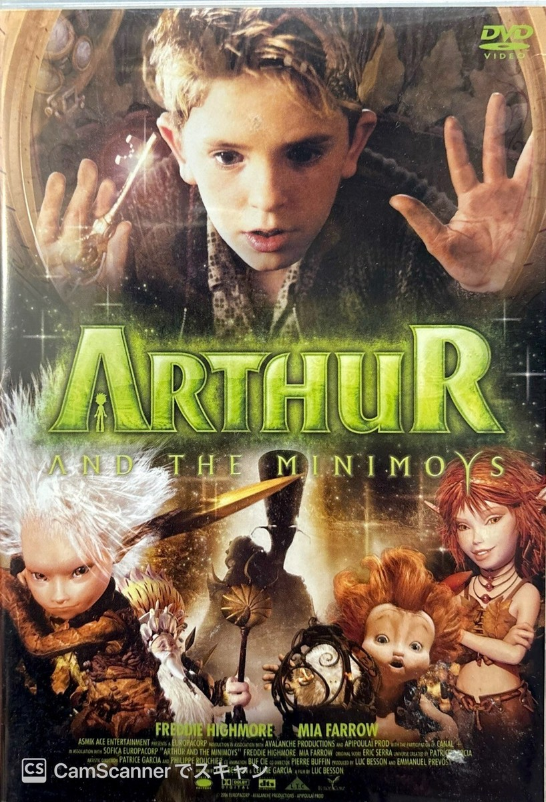

Anmeldelse av Arthur og minimoyene
Fakta:
Filmen kom ut i 2006
Sjangeren er fantasy, eventyr, animasjon og familiefilm (en blanding av live-action og 3D-animasjon)
Plattform: Filmen er en kinofilm som også ble utgitt på DVD. I dag er den tilgjengelig for strømming, leing og kjøping på forskjellige streaming tjenester
Aldersgrensen er satt til 7 år
